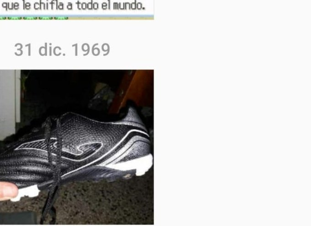

Jugate la peor secuela en la historia humana
Advertencia: Está sexualmente comprobado que jugar
esta cagada te reduce la densidad neuronal
WATAFAK, esto no existe aún
mi información dice que el desarrollador se suicidó, así que
no esperen una parte 3
Tranqui, no me vas a recordar
Digo digo, UNA AVENTURA A PURA FALOPA
JUGALO YA GORDO, ¿QUË ESPERÄS?
Para entender la historia de laberinto gud, hay que dejar de tratarlo como un juego y empezar a tratarlo como lo que realmente es, una obra de arte
Todo inicia en el año 2023, cuando el barba viajó en el tiempo por primera vez, le picaban las pelotas y al rascarse fue teletransportado al año 1969
en el momento, nuestro querido peludo comprendió que sus testículos eran extremadamente masivos, generando gravedad propia, y, en consecuencia de la relatividad general de Einstein, la gravedad de sus pelotas, equiparable a la de un agujero negro era capaz de curvar el espacio tiempo a voluntad, y también descubrió que con la excepcional cabeza de su pija
podía romper la tela del espacio y viajar entre dimensiones
Con mentalidad de tiburón, el barba viajó a una dimensión llena de gigantes y se robó un zapato(lo transporto haciendolo flotar con la gravedad de sus HUEVOS),
y con ese zapato creó el calzado que usaría Usain Bolt para correr
foto del chapato

Conciente de que un gran poder conlleva una gran responsabilidad, el barba decidió iniciar un viaje inter-dimensional de 2 meses para reflexionar que debía hacer con sus nuevas habilidades, en ese trayecto, se encontró a un gato tan pero tan mongolico que le dio pena y decidió llevarlo
a su propia dimensión especial para faloperos con alto nivel de retardo
Conciente de que un gran poder conlleva una gran responsabilidad, el barba decidió iniciar un viaje inter-dimensional de 2 meses para reflexionar que debía hacer con sus nuevas habilidades, en ese trayecto, se encontró a un gato tan pero tan mongolico que le dio pena y decidió llevarlo a su propia dimensión especial para faloperos con alto nivel de retardo
Ademàs le regaló el zapato, que por más mongolico que sea el gato este, se las arreglò para tunearlo y ponerle un propulsor, potenciado con 3 pelos que se le cayeron de los cojones al barba y debido a la electroestatica tenían potencia gravitatoria (este es el auto que aparece en el final secreto de Laberinto Gud)
El gato este, como ya sabemos, es terrible trastornado mental, y un día se falopeó tanto que empezó a ver arañas y una serpiente hecha de humo
Pensó que le querían quitar sus galletitas horneadas a base de falopa y como es tan mongolico empezó a esquivar a las arañas y la serpiente para llegar hasta sus galletas